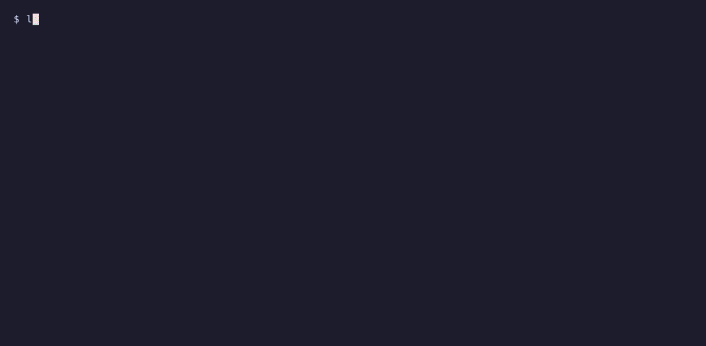

menu
Every instance
Home, VPS, lab: one menu, each with its monitors live, and a footer that says which answer — home ok vps down. Log in once, 2FA included.
a terminal UI for Uptime Kuma 2
Watch every monitor of every instance you run, live. Pause, edit and silence them, arrange status pages, manage the server — and hear about outages with the terminal closed. One keyboard, no browser tab.
go install github.com/icortesb/lazykuma/cmd/lazykuma@latest

menu
Home, VPS, lab: one menu, each with its monitors live, and a footer that says which answer — home ok vps down. Log in once, 2FA included.
g · t · /
Kuma's own groups and tags, made and used from here. Fold groups, move monitors, search names, targets and tags, show only what is down.
enter
Uptime over a day, 30 days and a year, the certificate, a ping chart from the last hour to 30 days, and every state change.
S
Create a page, arrange its sections and monitors, set its theme and domains, post an incident, open it in the browser.
A
API keys for Prometheus and Grafana, proxies, Docker hosts with a connection test, and the database: size, shrink, clear statistics.
n · c · m
Forms for HTTP, keyword, ping and port; a field editor for every other type. Telegram, webhook and email channels, with a test. Silence while you deploy.
The same binary runs without the interface. A watch that reports every outage as a desktop notification, started at login; and a one-shot status for scripts and status bars.
systemd, XDG autostart, launchd or the Windows Run key — no admin rights. A Kuma restart is not an outage.
$ lazykuma autostart on
background alerts: on (systemd user service)
runs: /home/you/.local/bin/lazykuma
watch: running (pid 4182)Exit codes a script can read; JSON a status bar can colour.
"custom/kuma": {
"exec": "lazykuma status --json",
"return-type": "json",
"interval": 60
}The footer of every screen says its keys. The same letter does the same thing on a monitor in the list and on its detail.
curl -fsSL https://github.com/icortesb/lazykuma/releases/download/v0.7.0/lazykuma_0.7.0_linux_amd64.tar.gz | tar -xzf - lazykuma && mkdir -p ~/.local/bin && mv lazykuma ~/.local/bin/curl -fsSL https://github.com/icortesb/lazykuma/releases/download/v0.7.0/lazykuma_0.7.0_darwin_arm64.tar.gz | tar -xzf - lazykuma && sudo mkdir -p /usr/local/bin && sudo mv lazykuma /usr/local/bin/Invoke-WebRequest https://github.com/icortesb/lazykuma/releases/download/v0.7.0/lazykuma_0.7.0_windows_amd64.zip -OutFile lazykuma.zip; Expand-Archive lazykuma.zip -DestinationPath lazykumago install github.com/icortesb/lazykuma/cmd/lazykuma@latestRequires Uptime Kuma 2.x. One static binary, no runtime dependencies. First run →